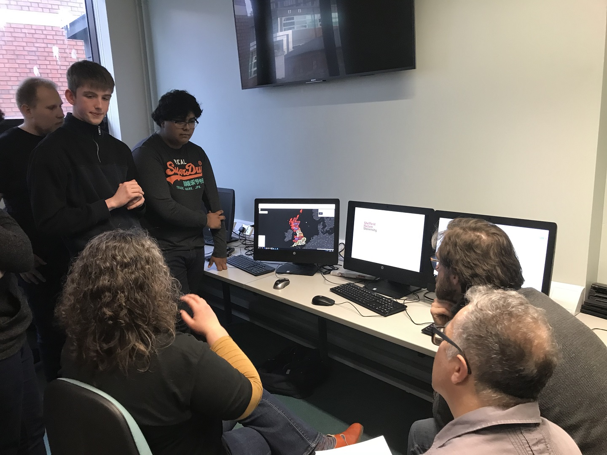

Cantor College was established in 1989 to specialize in Computing and Design. At Cantor College, we want to give students the education they need to achieve their career aims, leaving them equipped with the knowledge, skills and experience to succeed. Cantor College gives you the opportunities that can give you the edge when you enter the world of work, through our teaching and our links to some of the world's leading researchers and employers. Our students have gone on to successful careers in a wide range of industries across the globe. Whatever your ambitions, our learning and support can help to get the most out of your time with Cantor College, both as a student and in your future career.
Information for Staff
News: Cantor College recently hosted the Software Engineering student of the year awards. Short listed candidates from around the country attended the one day event
Academic Registry: For academic regulations, assessment, awards, student records and course validation.
Catering Services: Contact the Catering Services regarding on and off-site catering
Financial Services: The financial team based on the 2nd Floor are responsible for all areas of student finance as well as College budgeting
Information Systems Services: The ISS team delivers the College’s computing facilities including all hardware and software. They also run the staff helpdesk
Marketing Services: The Marketing Team will help promote events and new courses. They will help with press release preparation.
Personel Services: All staff pay and conditions enquiries should be directed to the Personnel Services team on the 3rd floor.
Facilities: The facilities are responsible for the general care and maintenance of the College. All enquiries via the main helpdesk